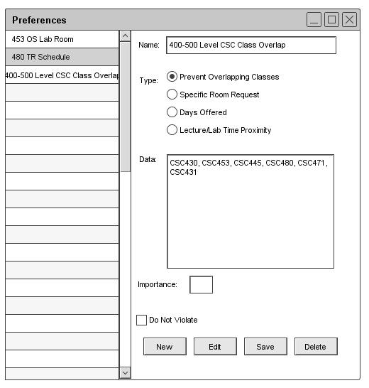

2.4.1.2. Edit Preferences
To edit preferences the user must first select from the preference to edit from the left column. Once that is done the data is shown as in Figure 38 but it is not editable.
To edit the information the user must click the "Edit" button and the
fields become editable.

Figure 38: Edit Preference
Once the user has finished the changes, the user must click the "Save" button and the changes are instantly made
to the database as shown, for example the preference name has been changed as shown in Figure 39. If the user does not
click "Save" then the changes are thrown out.

Figure 39: Editing Preference
Prev: preferences-add
| Next: preferences-remove
| Up: functional
| Top: index